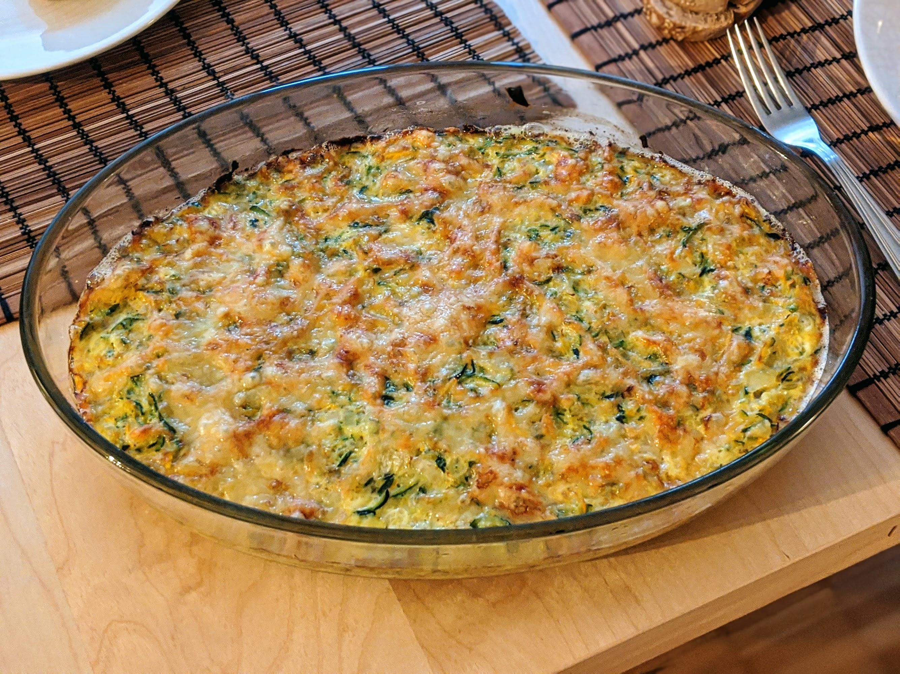

Gratin de courgettes

Pour 4 personnes :
- 4 belles courgettes
- 3 oignons
- 100 g d'emmental râpé
- 3 œufs
- Deux bonnes cuillères à soupe de crème épaisse
- (facultatif) Une gousse d'ail
- Sel, poivre, muscade, huile d'olive
- Éplucher et émincer les oignons, et les faire fondre avec de l'huile d'olive dans une grande poêle.
- Bien laver les courgettes et les râper, sans les éplucher. Les rajouter dans la poêle, avec l'ail écrasé si t'en as.
- Faire préchauffer le four à 210°C (à peu près). Mélanger les œufs, les deux tiers de l'emmental et la crème dans un saladier. Saler, poivrer, muscader.
- Égoutter le contenu de la casserole, le mettre dans le saladier, puis bien mélanger.
- Beurrer un plat à gratin, mettre le tout dedans, ajouter le reste d'emmental, et enfourner pendant un bon quart d'heure (jusqu'à ce que le dessus soit bien gratiné — incroyable, n'est-ce pas ?). Servir chaud.
Retour à la liste des recettes